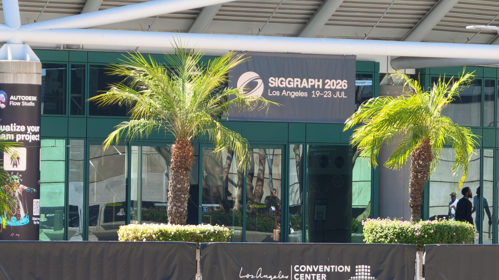
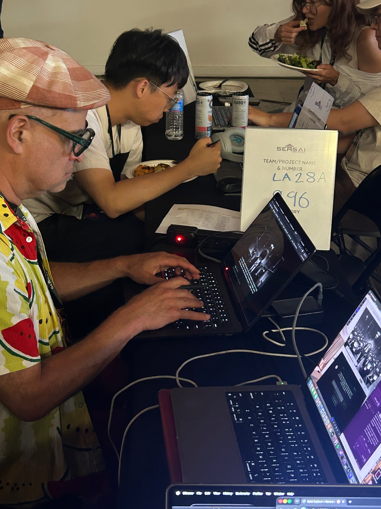

Question
Can a captured 3D world behave like a live musical instrument?
Context
Gaussian splats are usually treated as static records of real places. We wanted to test them as expressive, time-based material: a scene that listens and changes with a performer instead of merely being viewed.
Experiment & technical approach
In 48 hours at the Worlds in Action Hackathon, we built a browser performance system using Spark.js, Meyda.js, and XGrids PortalCam. I explored mappings from audio features to splat scale, opacity, motion, and camera behavior, then shaped the interface so someone could move from a prepared setlist to a live visual without a specialist 3D tool.
In collaboration with Steph Ng and Nick Pudjarminta. Steph Ng is a creative technologist with skills in both design and engineering, with a background in AR/VR. Currently building a startup in digital fashion. Nick Pudjarminta is a creative technologist who co-founded the award-winning mixed reality studio AmaVR, led cutting edge VR research at the USC World Building Media Lab, and facilitated Metaverse technical pipelines at Meta.
Workflow: setlist preprocessing → Marble generation and editing → PLY/SPZ export → Spark.js visualizer → shader and camera animation driven by Meyda.js.
Findings
Low-level audio mappings were immediately legible, but too many simultaneous responses made the world feel like an equalizer rather than an instrument. The stronger interaction came from giving different musical features distinct spatial responsibilities and letting the camera respond more slowly than the shaders.
Implications
Future spatial-creation tools could treat sound as an authoring input, not an effect added at export. A useful product workflow would let performers compose mappings, preview them live, and carry a captured world between editing and performance without rebuilding it in a game engine.
documentation



